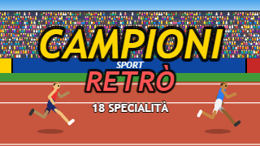

NEON STADIUM
18 specialità, decathlon a scelta e una carriera in tre campionati. Per Android — telefono, tablet e televisore — e per Windows.

SCARICA PER ANDROIDtelefono, tablet, televisore · .apk SCARICA PER WINDOWSun file solo, niente da installare · .exe GIOCA NEL BROWSERsubito, senza installare niente · PC e telefonoGuarda il trailer
·
Il torneo del regno
Dentro il gioco c'è un torneo medievale segreto: 13 prove fra orsi, maiali unti, arieti e mangiafuoco, con la sua carriera e il guardaroba dei costumi. Per entrare serve la parola d'ordine.
Come si installa su Android
- Scarica il file e aprilo: Android chiederà il permesso di installare app da questa origine.
- Se avevi una versione precedente alla 1.0.6.4, disinstallala prima: la firma è cambiata.
- Sul televisore, dopo l'installazione, il gioco compare fra le app del menu.
- Gli aggiornamenti successivi te li propone il gioco stesso, e se li scarica da solo.
Come si installa su Windows
- Non si installa: è un file solo, lo metti dove vuoi e lo apri.
- La prima volta Windows avvisa che non conosce il programma: Ulteriori informazioni → Esegui comunque. Succede a tutti i programmi senza firma commerciale.
- Ti chiede subito se questo computer deve farsi comandare da un telefono o un tablet: se rispondi no, non apre nessuna porta.
- F11 passa da schermo intero a finestra, Esc torna indietro e dal titolo chiude.
- Serve Windows 10 o 11 a 64 bit. Gli aggiornamenti se li scarica e se li mette a posto da solo.
Come si gioca
Due tasti, A e B, come nei giochi di atletica di una volta. Si gioca col touch, con una tastiera USB, oppure — se il gioco gira su un televisore — da un telefono o un tablet sulla stessa rete, che diventa il telecomando.